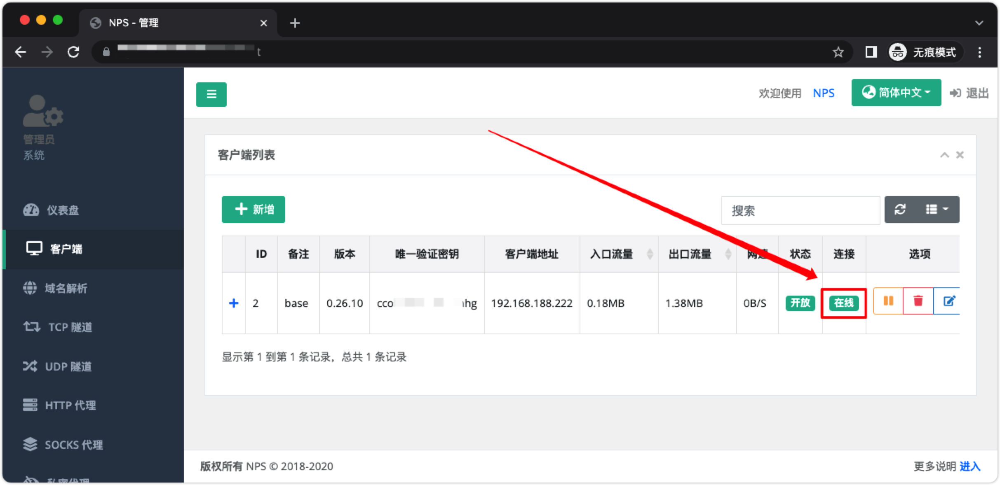
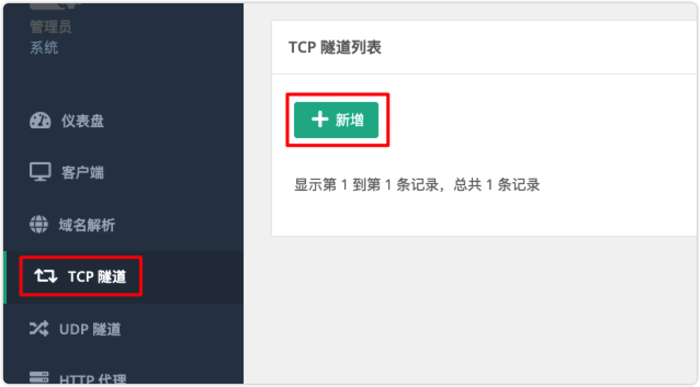
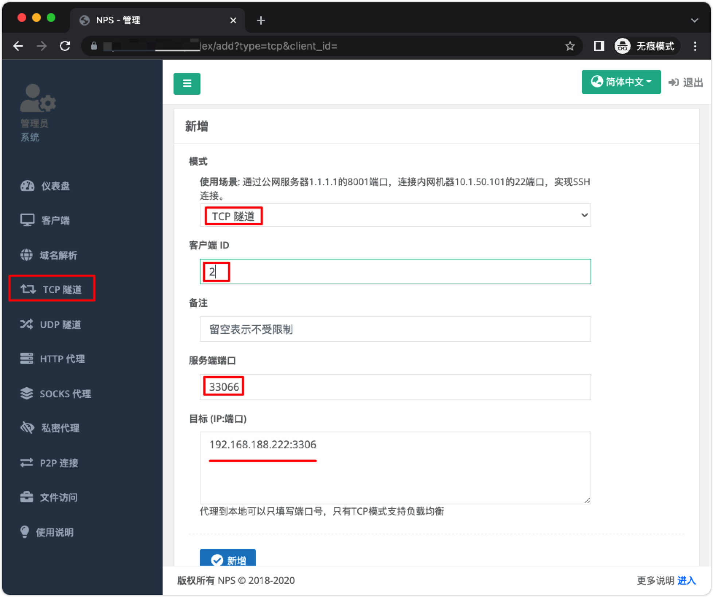
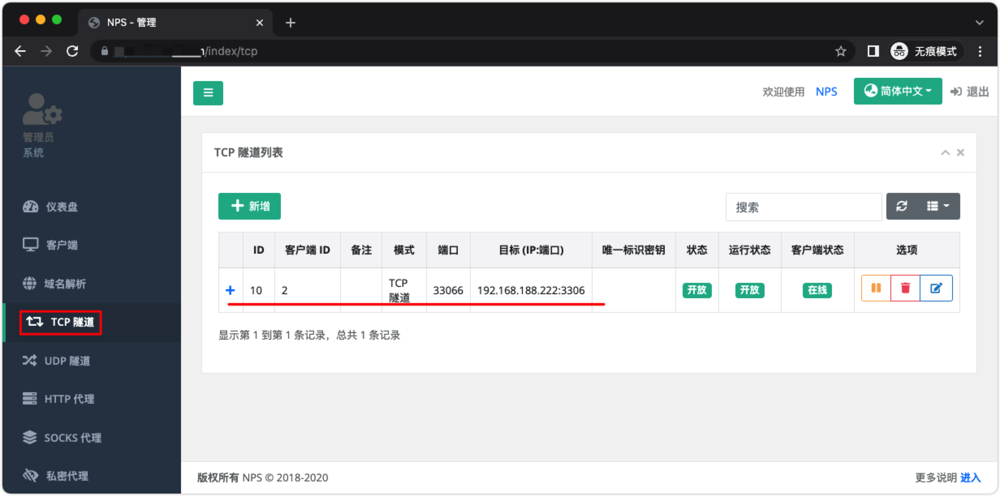
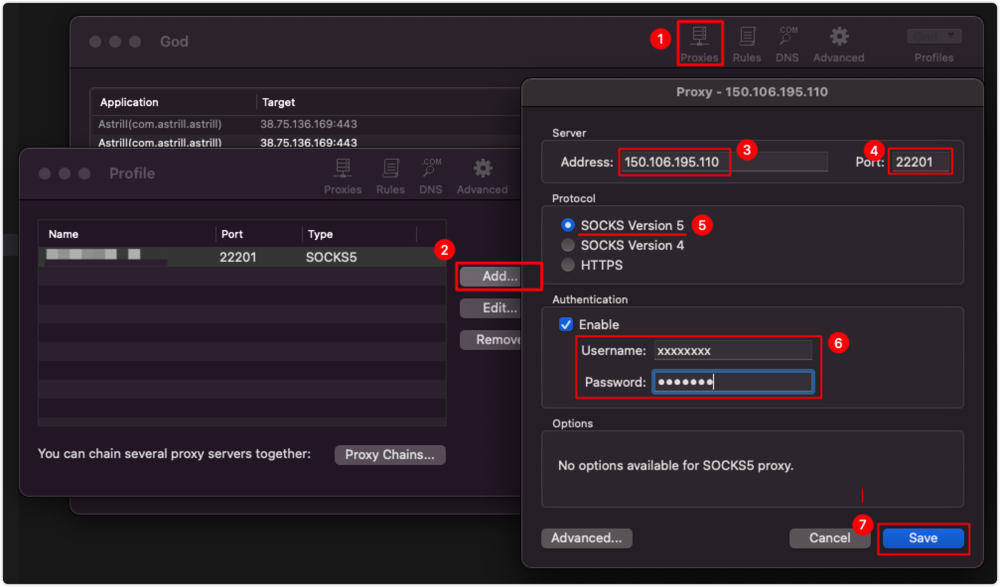

![docker-tutorial logo]() docker-tutorial
docker-tutorial
docker-tutorial
docker-tutorial
docker-tutorial
docker-tutorial
nps 一款轻量级、高性能、功能强大的内网穿透代理服务器。支持tcp、udp、socks5、http等几乎所有流量转发，可用来访问内网网站、本地支付接口调试、ssh访问、远程桌面，内网dns解析、内网socks5代理等
服务器搭建在拥有公网 ip=150.106.195.110 的服务器上。下载配置 nps/conf，将配置放在 /opt/nps/conf 目录下，下面我们使用 docker 部署 NPS 服务端：
# 创建 /opt/nps 目录存放配置文件
mkdir /opt/nps
# 拉取 ffdfgdfg/nps 镜像
docker pull ffdfgdfg/nps
# 运行 nps 容器，配置文件夹 conf 在 /opt/nps/conf 目录下
docker run -d --name=nps --restart=always --net=host -v /opt/nps/conf:/conf ffdfgdfg/nps
# 查看日志
docker logs nps
启动之后默认端口 8080，通过使用 http://<你服务器IP>:8080 访问管理界面。

使用用户名和密码登陆（默认admin/123，正式使用一定要更改，修改 /opt/nps/conf/nps.conf 配置文件中的 web_password），也可以在这里配置更改默认控制台管理平台端口（web_port = 8666），通道端口更改 bridge_port=8024
记得在控制台开放端口，面板默认端口是 8080，与客户端通信端口是 8024。


注意：客户端命令 ./npc -server=150.106.195.110:8024 -vkey=<唯一验证密钥> -type=tcp 中的 唯一验证密钥 用于客户端安装需要使用
客户端安装在你需要穿透的内网服务器(电脑)上。
# 创建 /opt/nps 目录存放配置文件
mkdir /opt/npc
# 拉取 ffdfgdfg/nps 镜像
docker pull ffdfgdfg/npc
# 运行 npc 容器，按提示改好命令，如下图所示
# 唯一验证密钥在管理界面中获取
docker run -d --name=npc --restart=always --net=host ffdfgdfg/npc -server=<ip:port> -vkey=<web界面中显示的密钥> <以及一些其他参数>
# 示例
docker run -d --name=npc --restart=always --net=host ffdfgdfg/npc -server=150.106.195.110:8024 -vkey=<唯一验证密钥>
# 查看日志
docker logs npc
服务运行起来，这样客户端就连接到了 NPS 的服务端了



假设我们要穿透局域网 MySQL 数据库，在 目标 (IP:端口) 配置内网 MySQL IP:端口 192.168.188.222:3306，在外网访问的端口 服务端端口 配置 33066

配置完成之后你可以使用公网 ip=150.106.195.110 IP 地址 和端口 33066 连接到你内网的机器中的数据库。
到这里就完成了，你可以自己继续研究一下更多的功能，也可以看看官方的说明文档。
通过 Socks5 代理可以访问内网任意服务，不必建立一个个的内网穿透隧道。在设置代理之前确保 客户端 建立好，并且 链接 状态为 在线。


在建立好 Socks5 代理之后，需要使用 proxifier 配置代理访问公司内网
